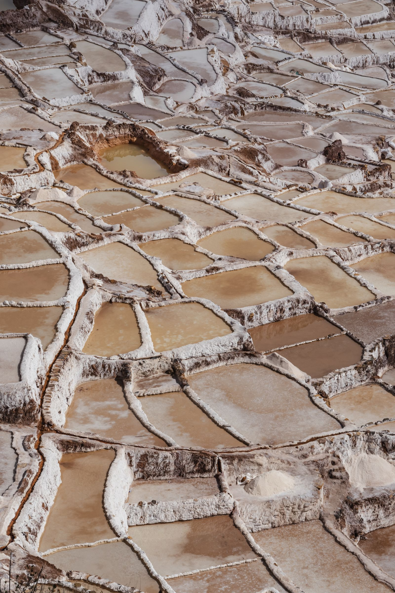

Maaşın Tuzu: Romalı Askerler Gerçekten Tuzla mı Ödeme Aldı?
Ay sonunda hesabınıza yatan paraya İngilizcede “salary” deniyor ve ders kitabı açıklaması hazır: Romalı askerlere maaşları tuzla ödenirdi, “salarium” da tuzdan geliyor. Hikâye o kadar yaygın ki bir iş gezisinde, bir kelime sohbetinde ya da bir sunumda duymuş olmanız çok olası. Üzerinde kaynak aradığımda hikâyenin iki ucunun da sağlam olmadığını gördüm. Kelimenin tuzla ilgisi gerçek görünüyor, ama askerlerin tuzla maaş aldığına dair kanıt çok zayıf. Üstelik Türkçedeki “maaş” bambaşka bir yoldan, tuzla hiçbir ilgisi olmayan bir kökten geliyor.

Herkesin bildiği hikâye
Hikâyenin en yaygın hâli şöyle: Roma ordusunda askerlere tuz ödemesi yapılırdı, çünkü tuz hem yemeğe tat vermek hem de et ve balığı saklamak için çok değerliydi. Latince “sal” tuz demek, “salarium” da tuz parası ya da tuz payı. Zamanla bu sözcük her türlü iş karşılığı ödemeye genişledi. Kelime Eski Fransızca “salaire” ve Orta İngilizce “salarie” üzerinden bugünkü “salary”ye ulaştı.
Bu anlatımı birçok web sitesinde okuyabilirsiniz. Okuduğum bir örnekte (dantesisofo.com) tek bir açıklama var: askerlere tuz almaları için bir ödenek veriliyordu. Sayfa kaynak göstermiyor ve başka bir görüşten söz etmiyor. Tastes of History sitesindeki başka bir yazı ise bu inanışı “yaygın” diye anıyor ve pek olası görmediğini söylüyor.
Kanıt arayınca
James Coverley’nin bu konuda yazdığı bir Substack yazısı, hikâyeyi madde madde sorguluyor. Bu bir kişinin yorumu ve ben antik metinleri kendim okumadım, ama iddiaları açık, bu yüzden bir bir aktarıyorum.
- Askerler tuzla ödendi mi?Coverley’e göre “antik tarihin hiçbir yerinde” askerlerin tuzla ödendiğine dair tek bir kanıt yok. Askerlere tuz payı verildiği doğru, ama bu pay ücretsiz değildi: askerler kendi geçimlerini kendileri ödüyordu ve tuz da yedikleri her şey gibi hesaba yazılıyordu.
- Plinius ne diyor?Wikipedia’nın “Salary” sayfası kelimeyi Plinius’un Doğa Tarihi’ne bağlıyor. Coverley’e göre Plinius askerlerin ücretinden söz etmiyor. 31.89’da bir tuz satış vergisini anlatıyor ve Wikipedia’daki alıntı yanlış çeviri.
- Livy’nin tuz vergisiLivy (29.37.3) yaklaşık M.Ö. 204’te getirilen bir tuz vergisini anlatıyor. Sansür Marcus Livius’a “tuz tüccarı” lakabı takılıyor. Bu bir vergi hikâyesi, maaş hikâyesi değil.
- “Tuz parası” (salarium argentum)Coverley bu terimi bir efsane olarak görüyor. Terim hiçbir antik kaynakta yok, Viktorya dönemi sözlük yazarlarının vestiarium (“giysi parası”) benzetmesiyle uydurduğunu öne sürüyor. Askerlere ayrıca tuz için para vermenin de pek akla yatkın olmadığını ekliyor.
- 1812 Savaşı’nda tuzlu suAmerikan askerlerinin 1812 Savaşı’nda maaşlarının bir kısmını tuzlu suyla aldığı iddiası, Coverley’ye göre Wikipedia’nın “History of Salt” sayfasında kaynaksız duruyor ve dayanağı görünmüyor.
Roma’da tuz: gerçek olan kısım
Hikâyenin yanlış olması, tuzun Roma için önemsiz olduğu anlamına gelmiyor. Tastes of History’deki özete göre Roma büyüdükçe tuzu başkente taşıyacak yollar yapıldı ve bunların en bilineni Roma’dan Adriyatik’e uzanan via Salaria, yani “tuz yolu”ydu. Adriyatik’in sığlığı, Roma’ya çok daha yakın olan Tiren Denizi’nden daha yüksek tuzluluk ve verimli güneş havuzları sağlıyordu.
Roma İmparatorluğu boyunca tuz işletmeleri genellikle kamu malıydı ve hükümet tarafından en yüksek teklifi verene kiralanıyordu. İlkini Ostia’da Ancus Marcius’un kurduğu söyleniyor. Deniz suyu sığ, bölmeli havuzlarda buharlaştırılıyor, salinator denen işçiler kristalleşen tuzu tırmıklayıp yığınlara döküyordu. Yakıt ve emek yüzünden tuz pahalıydı. Klasik Akdeniz’de balık sosu (garum) daha ucuz bir ikame oluyordu.
Bu ayrıntılar tuzun değerini gösteriyor, ama bir askerin maaşının tuz olduğu sonucunu çıkarmıyor.
Askerin ücretinin adı zaten başkaydı: stipendium
Hikâyede gözden kaçan bir ayrıntı var. Wikipedia’nın “Pay (Roman army)” maddesinde Roma askerinin yıllık ücreti stipendium adıyla veriliyor ve maddede tuzdan da salarium’dan da söz edilmiyor. Maddenin tablosuna göre bir lejyoner yılda Augustus döneminde 225 dinar alıyordu. Domitianus bunu 300’e çıkardı, Septimius Severus 450’ye, Caracalla 675’e, Maximinus ise 1.350’ye. Tastes of History ise Gaius Marius’tan itibaren günde 10 as, yani yılda 225 dinar diyor ve Severus’un ücreti 500’e yükselttiğini yazıyor. İki kaynak Severus’un rakamında ayrılıyor.
Ücretin tamamı elde kalmıyordu. Maddeye göre Cumhuriyet döneminde quaestor, buğdayın, giysinin ve gereken silahın bedelini ücretten düşüyordu. İmparatorluk döneminde de bakım masrafları lejyoner ve yardımcı birlik askerlerinin ücretinden kesiliyor, ücretin bir kısmı aynî olarak ödeniyordu. Tastes of History de devletin giyim ve yiyecek için bir vergi kestiğini yazıyor ve açık bir cümle kuruyor: Roma askerlerine hiçbir zaman gerçek tuzla ödeme yapılmadı.
Bir başka ayrıntı da askerin gelirinin asıl kaynağının zamanla ücret olmaktan çıkması. Maddeye göre geç Cumhuriyet’ten itibaren eklenen donativum adlı ikramiyeler, 4. yüzyılda bir lejyonerin toplam gelirinin yalnızca %10 ile 15’ini temel ücretin bırakacağı hâle gelmişti. Terhis olan lejyoner 3.000, pretoryen 5.000 dinar alıyordu. Maximinus orduyu yanına çekmek için ücreti ikiye katlamayı ve yeni ikramiyeler dağıtmayı vaat etti.
Buradan çıkan sonuç şu: Roma’da askerin parası vardı, rakamları vardı, kesintileri vardı ve adı stipendium’du. “Tuzla ödeme” hikâyesinin tutunması için bu paranın bir kısmının tuz olarak verildiğine dair bir iz gerekir, ama iki kaynak da böyle bir iz görmüyor.
Peki kelime nereden geliyor?
Coverley, “salary”nin Latince salarium’dan geldiğini kabul ediyor ve salarium’un “tuzla ilgili” anlamına gelen salarius sıfatından türediğini söylüyor. Ama kelimenin nasıl olup da bir ödenek anlamına geldiğine dair tatmin edici bir açıklama olmadığını da ekliyor. Tastes of History’deki özet daha dengeli: bugün en çok kabul gören görüşe göre salarium, sal’dan türüyor ve bu, tuz almak için verilen bir ödenek ya da tuz yollarını ve tuz tedarikini güvenceye almanın maliyeti olabilir.
İki kaynağın birleştiği nokta şu: kelime tuzla ilişkili. Ayrıldıkları nokta, bu ilişkinin mekanizması. Coverley kendi tahminini de veriyor, bunu kanıt olarak değil, varsayım olarak sunuyor: salarium belki “artan para” anlamında bir argoydu. Gençliğindeki “bira parası” gibi, zorunlu giderler çıktıktan sonra eğlenceye kalan pay.
Üç açıklamadan hiçbiri kesin değil. Bu yüzden “salary tuzdan gelir” cümlesi bir yarım doğru: kelime ile tuz arasındaki bağ muhtemel, ama bu bağın nasıl kurulduğu bilinmiyor.
Türkçedeki maaş: bambaşka bir yol
Buraya kadar anlatılan her şey Latince ve İngilizce için. Türkçede “maaş” bu zincirin hiçbir yerinde değil. Wiktionary’ye göre Arapça maʿāš (معاش), “yaşamak” anlamına gelen ʿāša fiilinin masdarı, kökü ع-ي-ش. Temel anlamı “geçim, maişet”. Sonraki dönem Arapçasında “maaş” anlamı da kazanmış, eş anlamlısı rātib. Osmanlı Türkçesi kelimeyi maaş, emekli aylığı, diğer gelir ya da geçim anlamlarıyla ödünç almış.
Yan yana koyunca ilginç bir tezat çıkıyor. Bir kültür ücreti “tuz” üzerinden düşünmüş olabilir, öbürü “geçim” üzerinden. İki sözcük de karşılığını aynı şeyde, günlük hayatta ayakta kalmak için gereken şeyde buluyor. Bu karşılaştırma benim yorumum, kaynaklar böyle bir bağ kurmuyor.
Osmanlı’da maaşın akrabaları
TDV İslâm Ansiklopedisi’nin “rızık, maaş” maddesi, İslam tarihinde devletin hak sahiplerine dağıttığı ödemeleri anlatıyor. Madde “rızk”ın devletin hak edenlere ayni (erzak) ya da nakdi (atâ, atıyye) olarak verdiği pay olduğunu söylüyor. Maaş ve rızık maddede iç içe işleniyor ve rızık maaşları beytülmâlin ana harcama kalemi. Halife, vali ve kadıların maaşları fey gelirlerinden, vergi toplayan görevlilerinki doğrudan hazineden ödeniyordu.
Kelime dağarcığı zamanla değişmiş. Maddeye göre Fatımîler’de revâtib “rızık”ın yerini aldı, Selçuklular’da yaygın terim idrâr, Memlûkler’de mevâcib idi. Osmanlılar mevâcib’i devraldı ve onunla birlikte ulûfe (vakıf ya da devlet bütçesinden aylık ödeme), câmekiyye ve vazife (bürokratların maaş ve görevleri) terimlerini kullandı.
Tarihsel olarak da ilginç ayrıntılar var. Hz. Ömer döneminde valilere, kadılara, kâtiplere ve âlimlere düzenli maaşlar bağlandı. Daha sonraki Abbasî döneminde maaş ödemeleri bütçe açığına yol açtı, ödemeler geciktirildi, kesildi ve borçlanma yoluna gidildi. Emevîler’de askerlerin ücreti (mürtezika) azaltıldı ve maaşın yerini giderek ikta, yani toprak tahsisleri aldı. Bütün bunlar maddenin özeti, ben başka bir kaynakla karşılaştırmadım.
Osmanlı’da günlük hesap, üç ayda bir ödeme
Osmanlı’da maaşın nasıl işlediğini TDV İslâm Ansiklopedisi’nin “mevâcib” maddesinden okudum. Mevâcib, memur ve askerlere ödenen maaşın adı. Madde kelimenin Arapça “yapılması, verilmesi gerekli olan” anlamındaki mâ vecebe ifadesinden geldiğini söylüyor. Ulûfe de aynı anlama geliyor.
Sistem şöyle işliyordu: maaş günlük (yevmiye) hesaplanıyor ve üç ayda bir ödeniyordu. Her üç aylık ödemeye kıst deniyordu. Dört dönemin adları da maddede var: masar (Muharrem-Rebîülevvel), recec (Rebîülâhir-Cemâziyelâhir), reşen (Receb-Ramazan) ve lezez (Şevval-Zilhicce). Kazaskerin maaşı ise aylık ödeniyordu.
Rakamlar da ilginç. Maddeye göre kâtipler ortalama günde 15-20 akçe alıyordu. Bir yeniçeri günde 2 akçe ile başlıyor, bu I. Ahmed döneminde 3’e çıkıyordu. Yeniçeri için üst sınır 16. yüzyıl başında 5, 17. yüzyıl ortasında 12 akçeydi. Üst düzey yetkililer çok daha fazla alıyordu: Rumeli kazaskeri günde 572 akçe.
Sonra bir sorun çıkıyor. Maddeye göre 16. yüzyıl sonundan itibaren maaş kademeleri artmaz oldu, akçe ise değer kaybetmeye devam etti. Maaşlar giderek sembolik hâle geldi ve görevliler gerçek gelirlerini harçlardan sağladı. II. Mahmud döneminde sistem düzenli sabit maaşa dönüştü ve bu 27 Mart 1838 tarihli bir emirle duyuruldu.
Burada iki Osmanlı kaynağı arasında küçük bir tutarsızlık var. İslâm Ansiklopedisi’nin “ulûfeciyan” maddesi, süvari birliği ulûfecilerin ücretinin üç aylık değil günlük olduğunu ve bir sergi sırasında sadrazamın önünde ödendiğini söylüyor. “Mevâcib” maddesi ise maaşın günlük hesaplanıp üç ayda bir ödendiğini yazıyor. Aynı sistemin iki yüzü olabilir, ama bunu bu kaynaklardan çözemedim.
Tuzun dilde bıraktığı izler (kaynaksız kısım)
Bu bölüm kaynaklardan değil, genel bilgimden. Hiçbirini bu yazı için doğrulamadım. Tuz, dilde başka izler de bırakmış gibi görünüyor: İngilizcedeki “worth one’s salt” (tuzuna değmek, işinin hakkını vermek) ve Türkçedeki “tuz ekmek hakkı” gibi deyimler, tuzun değer ve sadakatle ilişkilendirildiğini düşündürüyor. “Salad” (salata), “sauce” (sos) ve “sausage” (sosis) sözcüklerinin de tuzla ilişkili olduğunu biliyorum. Ama bunlar benim hatırladıklarım, yanlış hatırlıyor olabilirim.
Bu bilgiyi neden buraya koydum? Çünkü “salary” hikâyesinin neden bu kadar kolay yayıldığını açıklıyor olabilir. Tuz, hem tarihte hem dilde güçlü bir değer sembolü. “Maaş tuzdan gelir” cümlesi bu semboller ağına çok iyi oturuyor. Bir hikâyenin güzel olması doğru olduğu anlamına gelmiyor.
Güzel etimoloji hikâyesini nasıl sınarsınız?
Bu bölüm benim önerim, kaynaklardan değil. “Salary” hikâyesi, kelime kökeni anlatılarının tipik bir örneği. Tuzdan para çıkması ilginç, kolay hatırlanıyor ve bir kelimeyi bir imgeye bağlıyor. Böyle bir hikâye duyduğunuzda üç soru sormak işe yarıyor gibi görünüyor.
Birincisi, ilk kaynak ne? Bu yazıdaki örnekte Plinius’a dayanıldığı söyleniyor, ama Plinius’un metni iki ayrı biçimde okunuyor. Hikâyenin dayandığı tek cümle tartışmalıysa hikâyenin kendisi de sağlam değil.
İkincisi, aynı dönemde başka bir kaynak var mı? Roma askerinin ücreti hakkında bu yazının kaynakları rakamlar, kesintiler ve ikramiyelerle dolu. Tuzla ödeme için aynı ayrıntı yok. Bir ödeme biçimi gerçekten uygulanıyorsa genellikle kayıtlara rakam ve oran olarak girer.
Üçüncüsü, hikâye kelimenin başka dillerdeki hâlleriyle tutuyor mu? Türkçedeki “maaş” kelimesi Arapça “yaşamak” kökünden geliyor ve geçim anlamıyla yola çıkıyor. İki dilde iki ayrı imge var: tuz ve geçim. Bu, “ücret her yerde tuzdan çıkmıştır” gibi bir genellemeyi zaten engelliyor.
Bu sınama hikâyenin yanlış olduğunu kanıtlamıyor. Yalnızca hikâyenin yeterli kanıtla desteklenmediğini gösteriyor. “Salarium” ile tuz arasında bir bağ olabilir. Ama askerlerin tuzla maaş aldığı iddiası, bu yazıdaki kaynaklarla, desteksiz kalıyor.
Bu yazının sınırları
Antik metinlerin hiçbirini (Plinius, Livy) kendim okumadım. Coverley’nin yazısını, Tastes of History özetini ve dantesisofo.com sayfasını okudum, hepsi ikincil ve kişisel kaynaklar. Coverley’nin Plinius okuması ile Tastes of History’nin Plinius aktarımı birbirini tutmuyor, hangisinin doğru olduğunu bilmiyorum. Wiktionary’de salarium maddesine erişemedim, bu yüzden Latince etimolojiyi yalnızca Coverley ve Tastes of History üzerinden aktardım. Maaş etimolojisini Wiktionary’nin Arapça maddesinden aldım. Roma ücretlerini Wikipedia’nın tablosundan ve Tastes of History’den, Osmanlı maaşını TDV İslâm Ansiklopedisi’nin “mevâcib” ve “ulûfeciyan” maddelerinden aktardım, orijinal belgelere bakmadım. TDV İslâm Ansiklopedisi maddesi “maaş” kelimesinin etimolojisini anlatmıyor, yalnızca kullanımını anlatıyor. Wikipedia’nın “Salary” sayfasına doğrudan bakamadım. Tuzla ilgili deyimler ve sözcükler benim genel bilgim.
Kaynaklar çelişiyor
- Plinius’un metniTastes of History, Plinius’un Doğa Tarihi’nde “askerlerin ücreti başlangıçta tuzdu” dediğini aktarıyor. Coverley, Plinius’un 31.89’da askerlerin ücretinden değil, tuz vergisinden söz ettiğini ve Wikipedia’daki alıntının yanlış çeviri olduğunu söylüyor. Orijinal metne bakmadım.
- Tuz payının niteliğidantesisofo.com askerlere tuz almaları için bir ödenek verildiğini yazıyor. Coverley, tuzun askerlerin kendi hesabına yazıldığını ve ücretsiz verilmediğini söylüyor.
- Roma’da tuz tayınıTastes of History makalesi bir Roma tuz vergisini ya da resmî bir tuz tayınını anlatmıyor. Coverley, Livy’ye dayanarak bir tuz vergisinden ve askerlere tuz payı verildiğinden söz ediyor.
- Severus’un ücretiWikipedia’nın tablosu lejyonerin yıllık ücretini 450 dinar veriyor, Tastes of History 500 diyor.
- Ulûfe ne zaman ödeniyordu?“Ulûfeciyan” maddesi günlük ödemeyi, “mevâcib” maddesi üç aylık ödemeyi anlatıyor. Çelişki gibi görünüyor ama aynı sistemin iki tarifi de olabilir.
- Kelimenin kökeniHer iki kaynak da salarium’un tuzla ilişkili olduğunu söylüyor. Coverley mekanizmaya dair tatmin edici bir açıklama olmadığını söylüyor. Tastes of History daha kabul görmüş bir açıklama sunuyor (ödenek ya da tuz yollarını güvenceye alma maliyeti).
Başlıca kaynaklar: James Coverley, “Were Roman soldiers paid in salt?”; Tastes of History, “A brief history of food’s salt”; dantesisofo.com, Salary; Wiktionary (yansı), معاش; TDV İslâm Ansiklopedisi, Rızık ve Maaş; TDV İslâm Ansiklopedisi, Mevâcib; TDV İslâm Ansiklopedisi, Ulûfeciyan; Wikipedia, Pay (Roman army); Tastes of History, Pay in the legions. Fotoğraf: Juan Carlos Quispe Pumayali / Pexels (Pexels lisansı).
Veri notu: Plinius ve Livy’nin metinlerini kendim okumadım. Antik iddialar Coverley’nin Substack yazısından ve Tastes of History özetinden aktarıldı, ikisi birbirinden ayrılıyor. Wiktionary’de Latince salarium maddesine erişemedim. Arapça maʿāš bilgisi Wiktionary’nin bir yansı sayfasından alındı. “Tuzun dilde bıraktığı izler” bölümü benim genel bilgimdir ve doğrulanmamıştır. İki kelimenin zincirini yan yana koyan yorum benimdir. Bu yazı bilgi amaçlıdır.